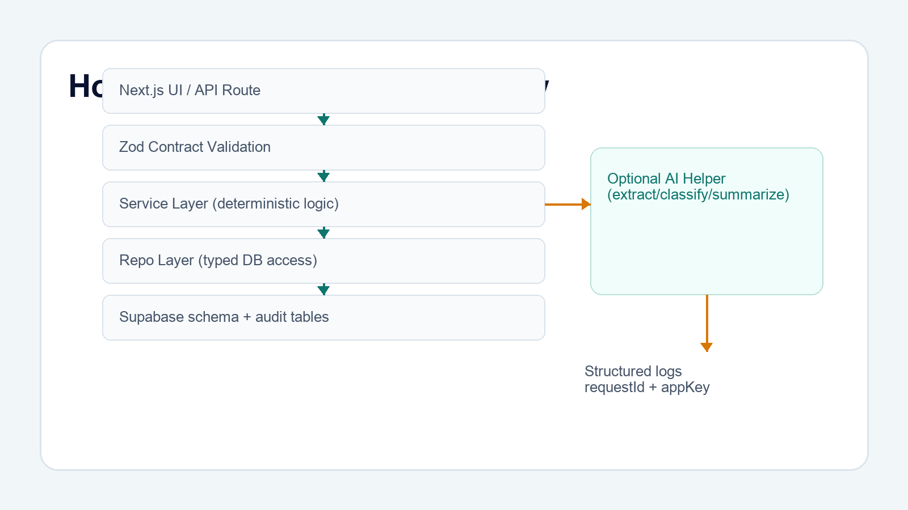

How we are building it (the complete nerdy version)
This is the nerdy version: schemas, services, logs, AI routing, and test harnesses all wired together.
If you care about maintainability, the data flow is the product.
A request enters a Next.js API route, gets validated, and is routed to a deterministic service. The service calls typed repositories, optionally invokes AI extract/classify/summarise helpers, writes to app-specific Supabase schemas, and emits structured audit stages. Every app has requestId + appKey logs and explicit persistence status semantics: stored, skipped, failed.
Comment “nerdy” if you want a per-layer walkthrough with example route + schema contracts.



Disclaimer: Product names, logos, and trademarks are the property of their respective owners and are used for editorial/demo context.